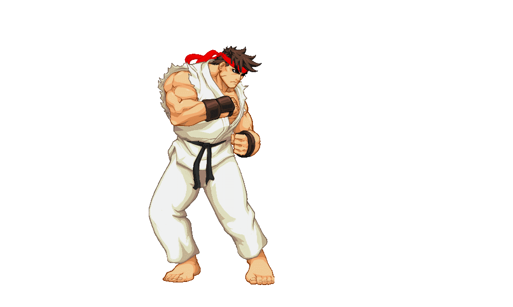
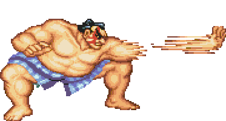
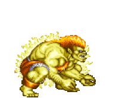
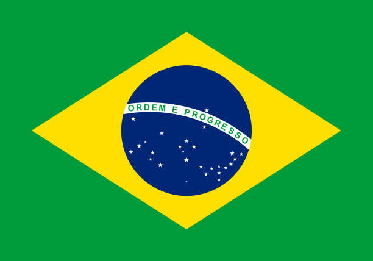
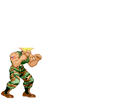
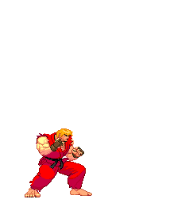
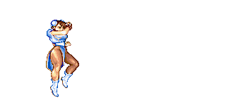
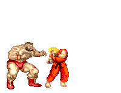
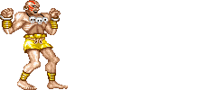
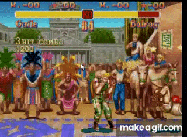

Street Fighter:
Uma Jornada de Sucesso!
Lançado pela Capcom em 1987, o primeiro título apresentou uma proposta inovadora: combates de artes marciais entre lutadores de diferentes partes do mundo. No controle de Ryu, o jogador percorria diversos países enfrentando adversários cada vez mais desafiadores. Ken também podia entrar na disputa no modo para dois jogadores.
Apesar da proposta inovadora, o jogo enfrentou algumas dificuldades. Seu sistema original de controles, baseado em botões sensíveis à pressão, não oferecia uma experiência muito acessível. Uma versão posterior, equipada com seis botões tradicionais, tornou os comandos mais simples e populares.
Street Fighter não alcançou o sucesso comercial que sua sequência conquistaria anos depois. Ainda assim, deixou um legado fundamental: estabeleceu as bases de uma franquia que mudaria para sempre a história dos jogos de luta.
Em 1991, a Capcom lançou um jogo que mudaria para sempre a história dos videogames. Street Fighter II chegou aos fliperamas e rapidamente deixou de ser apenas uma sequência para se tornar um fenômeno mundial.
Com oito personagens jogáveis, vindos de diferentes partes do mundo, cada lutador apresentava sua própria identidade, estilo de combate e golpes especiais. Ryu, Ken, Chun-Li, Guile e os demais personagens conquistaram jogadores e deram início a rivalidades que atravessariam gerações.
Mas a verdadeira revolução estava na experiência. Pela primeira vez, enfrentar outro jogador se tornou tão emocionante quanto vencer a máquina. Os fliperamas se transformaram em arenas de competição, onde amizades eram testadas, rivalidades nasciam e cada vitória tinha seu valor.
O sucesso foi estrondoso. Street Fighter II popularizou os jogos de luta competitivos, inspirou inúmeras franquias, incluindo Mortal Kombat, The King of Fighters entre outros e estabeleceu fundamentos que continuam presentes no gênero até hoje.
Seu impacto foi tão grande que o jogo recebeu diversas versões, atualizações e adaptações, mantendo sua popularidade por muitos anos.
Japão
Ryu volta ao torneio buscando adversários mais fortes e do aperfeiçoamento de suas habilidades. Sem interesse em fama, luta pelo real significado das artes marciais.

Japão
Lutador de sumô japonês, E. Honda busca provar a força e a tradição de sua arte marcial ao mundo. Orgulhoso de suas raízes, entra no torneio para conquistar respeito e reconhecimento.


Brasil
Criado na selva brasileira, Blanka desenvolveu habilidades selvagens e poderes elétricos. Entra no torneio para buscar reconhecimento e conexão com sua origem humana.

Estados Unidos
Militar americano movido pela vingança, Guile participa do torneio para encontrar M. Bison, responsável pela morte de seu amigo Charlie. Sua missão é fazer justiça.

Estados Unidos
Melhor amigo e rival de Ryu, Ken é um talentoso lutador americano. Entra no torneio para testar suas habilidades e provar sua força, sempre mantendo seu espírito competitivo.

China
Agente da Interpol, Chun-Li entra no torneio para investigar a organização Shadaloo e vingar a morte de seu pai, enfrentando M. Bison em busca de justiça.

União Soviética
Lutador profissional de Sambô, Zangief luta para honrar sua pátria e demonstrar ao mundo a força, garra, coragem e a resistência dos guerreiros soviéticos.

Índia
Monge indiano que utiliza seus poderes de alongamento e fogo para combater seus adversários. Luta para ajudar sua comunidade indiana e proteger sua família.
Uma das maiores revoluções de Street Fighter II surgiu quase por acaso. Durante o desenvolvimento, os programadores perceberam que alguns golpes podiam ser conectados em sequência, impedindo que o adversário reagisse a tempo. O que inicialmente era um comportamento não planejado acabou sendo mantido no jogo. Nascia ali uma das mecânicas mais importantes do gênero: os combos. Essa descoberta acrescentou uma nova camada de estratégia e habilidade aos combates. Dominar o tempo, a sequência e a combinação dos golpes passou a fazer toda a diferença entre jogadores iniciantes e experientes. O que começou como um acidente de programação se tornou uma das marcas registradas dos jogos de luta, influenciando gerações de títulos que vieram depois.
